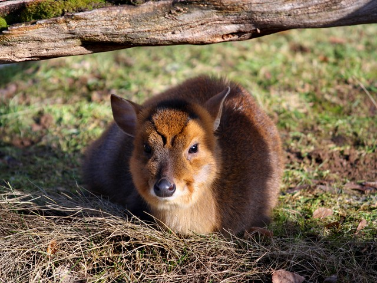
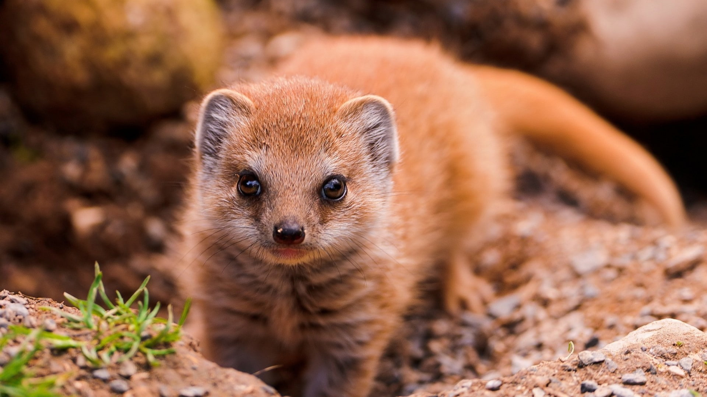
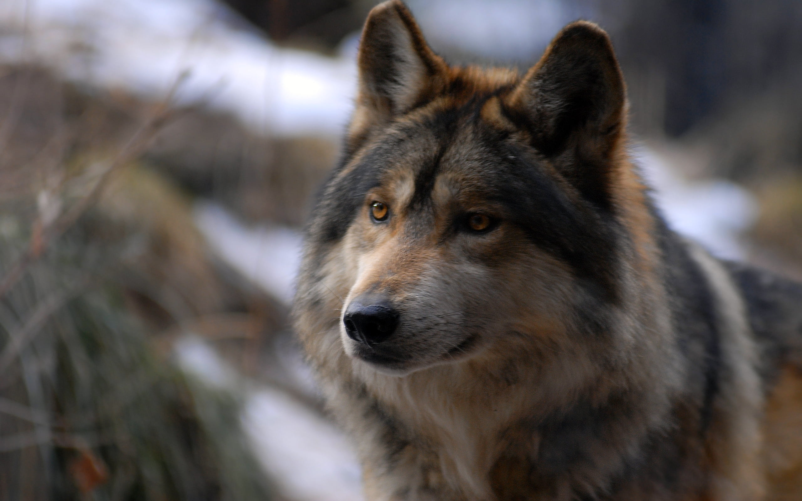
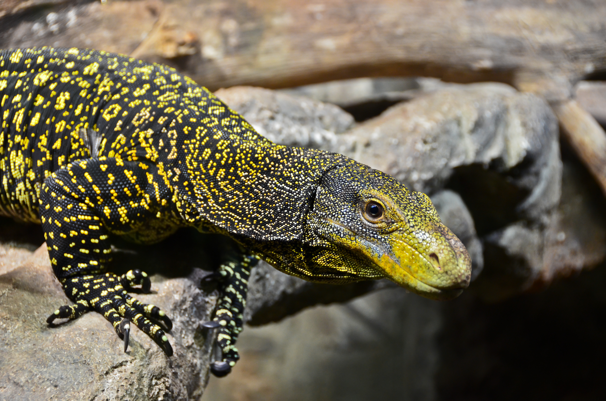
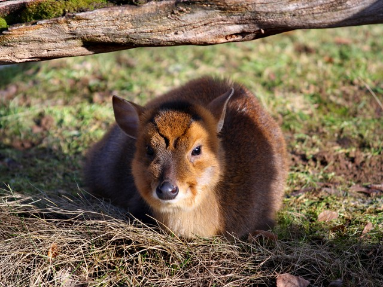
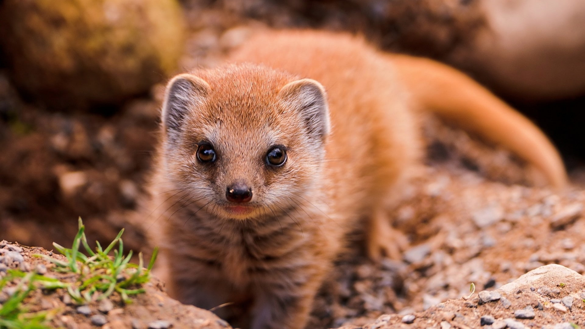
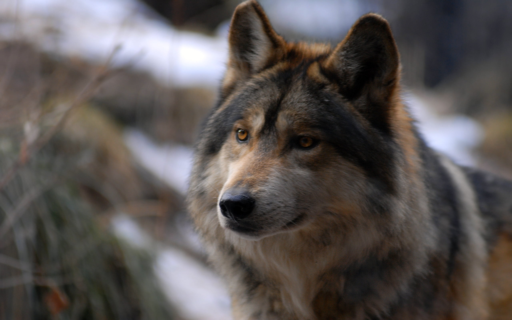
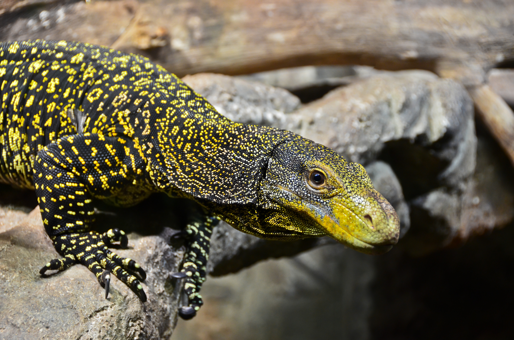

General Information
Located at an altitude of 1646 m above the sea level, on the Sahyadri mountain ranges which is part of Western Ghats in Maharashtra, Kalsubai Harishchandragad Wildlife Sanctuary is the nature’s heaven, which is the home to varieties of flora and fauna. Leopard, Jungle cat, Palm civet, wolf, jackal, fox wild boar, etc are the species of mammal found in abundance here. While among the reptiles, monitor lizard, fan-throated lizard, and turtles are often spotted in the park. And White necked Storks, Herons, ibises, waterbees etc, are the species of avifauna fly and sing in the clear clouds of the sanctuary. The green landscape is stocked with the beautiful trees like Behada, Avali, Hirda, Jambul, Chandawa, Behava, Kumbhal, Kudal, etc. For the wildlife enthusiasts, this place is a must visit, and so for the nature lovers.
Climate
The weather becomes quite pleasant because of the heavy rains that bring mesmerising fog along.
Insight
Amidst the park, there is a charming fort; Harishchandragad Fort which is surrounded by magnificent mountains with rugged cliffs. Apart from this several other monuments like Alang, Kalsubai, Kulanggad, Bahiroba, Mandangad and Ratangad, etc also lies near to this place. Being sprawled at such an height, this place is also an ideal place for trekking and other adventurous activities. There are quite a few trekking zones present along the western ghats. The awe-inspiring gushing valley flowing at the side of the slippery trekking path provides as the motivating sight for the trekkers. Monsoon is the best time to visit Kalsubai Sanctuary, when the lush green landscapes are transformed into a paradise.
Fauna
Mammal: Leopard, Jungle Cat, Palm civet, Mongoose yena, Wolf, Jackal, Fox Wild Boar, barking deer, Hare, Sambar, bats etc.Reptiles: Monitor Lizard, Fan-throated lizard, Turtles and many spices of snakes.
Birds: White nacked Storks, Herons, ibies, waterbees etc.
 






